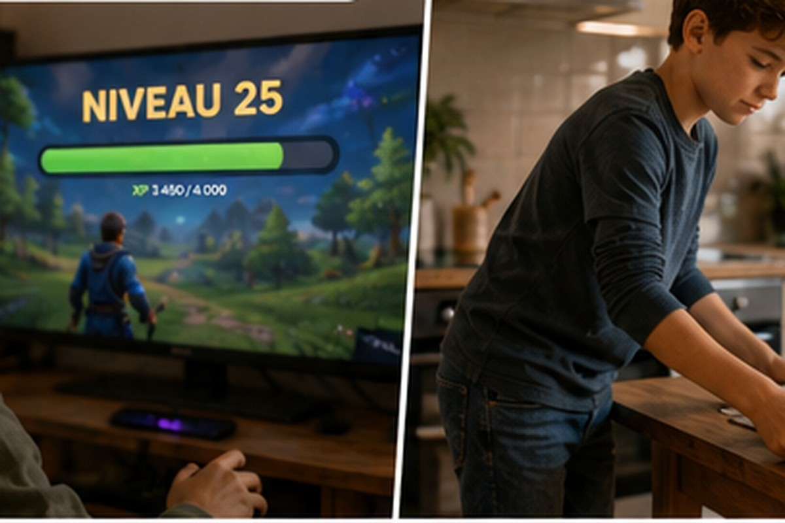
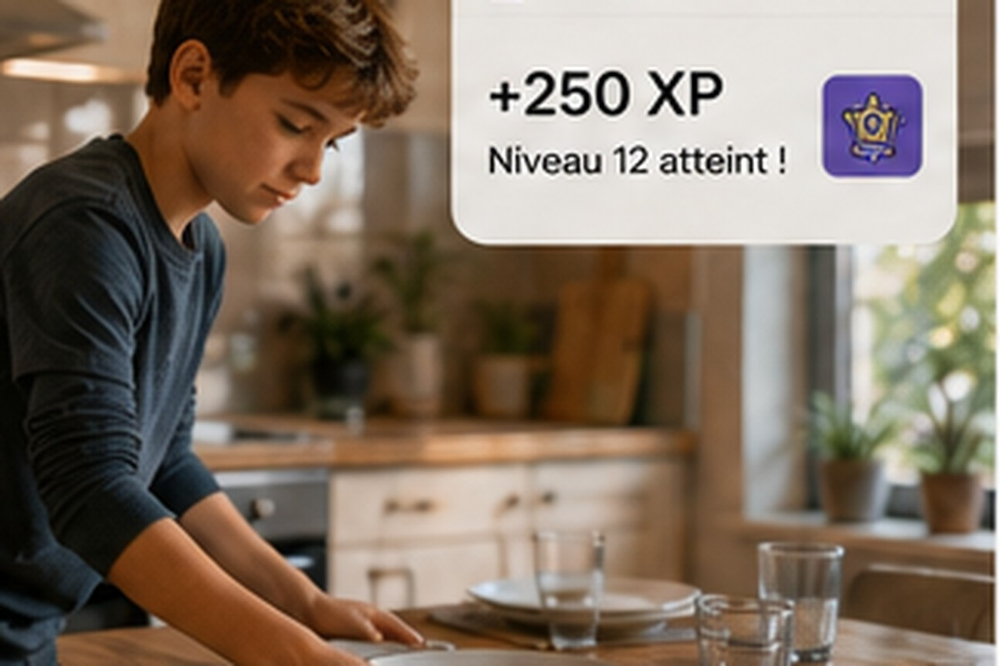
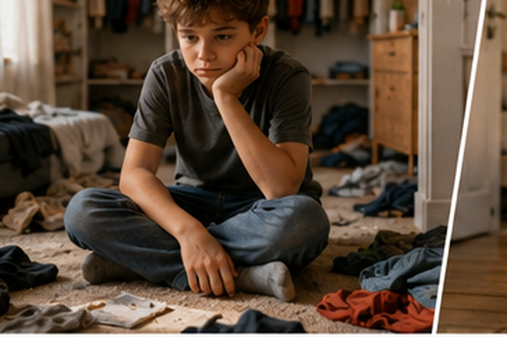
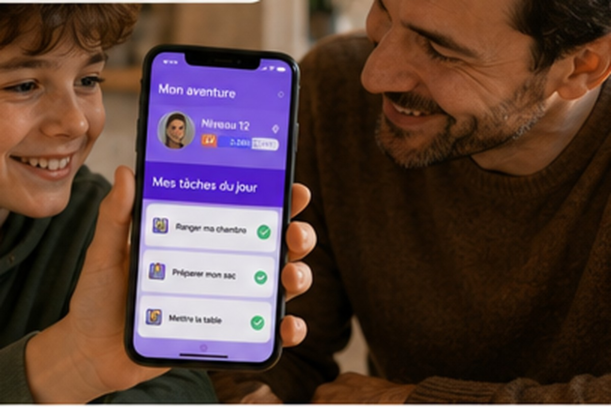
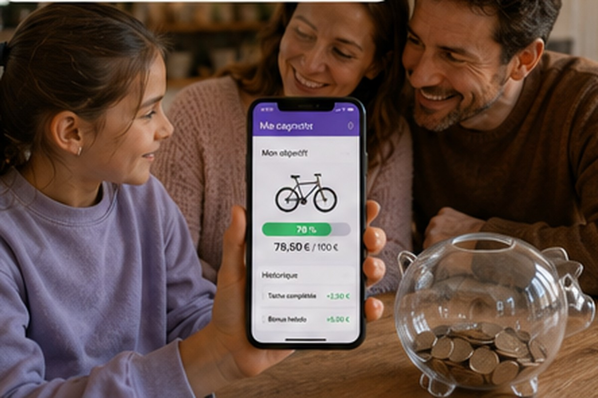

Vous lui avez dit une fois. Puis deux. Puis trois. La chambre n'est toujours pas rangée. Pas par opposition, pas par paresse — simplement parce que ranger sa chambre, à 9 ans, n'a aucun sens immédiat. Aucune conséquence visible. Aucune progression perceptible. C'est une tâche qui se répète sans jamais mener nulle part.

Avant — le jeu
Après — la tâcheCe que les jeux vidéo ont compris avant nous
Les jeux vidéo renvoient un feedback immédiat. Les tâches du quotidien, non — jusqu'ici.
Les enfants passent des heures à progresser dans des jeux sans que personne ne les y force. Ils recommencent un niveau raté dix fois de suite. Ils optimisent, planifient, s'investissent. Pas parce qu'on leur demande — parce que le jeu leur renvoie constamment un signal : tu avances, tu montes en niveau, tu deviens meilleur.
Ce n'est pas une question d'écran ou d'addiction. C'est une mécanique psychologique fondamentale : le cerveau humain, et particulièrement celui de l'enfant, est câblé pour répondre au feedback immédiat et à la progression visible.
Les tâches ménagères, elles, n'offrent rien de tout ça. On range, on dessert, on prépare son sac — et demain on recommence exactement au même endroit, comme si rien ne s'était passé. Le travail s'efface dès qu'il est accompli.
La différence entre récompense et progression

Face à ce problème, beaucoup de familles essaient le système de récompenses : de l'argent de poche contre des tâches, des étoiles collées sur un tableau, des petits cadeaux à la fin de la semaine. L'intention est bonne, mais le résultat est souvent décevant.
Pourquoi ? Parce qu'une récompense externe place la motivation en dehors de l'enfant. Il fait la tâche pour obtenir quelque chose — pas parce qu'il en est fier, pas parce qu'il grandit. Dès que la récompense disparaît ou perd de son attrait, la motivation s'évapore avec elle.
La progression, c'est différent. Accumuler de l'expérience, monter de niveau, voir une barre avancer — ça crée un sentiment de compétence. L'enfant ne fait plus la tâche pour avoir quelque chose. Il la fait parce qu'elle contribue à quelque chose qui lui appartient : son propre progrès.

Des points d'expérience ancrés dans le quotidien
L'interface Kidly — la progression en temps réel
Dans Family App, chaque tâche accomplie rapporte des points d'expérience — des XP. L'enfant les voit s'accumuler dans son application. Il monte de niveau. Il laisse une trace de ce qu'il a fait, jour après jour.
- Barre d'XP qui avance à chaque tâche
- Niveau qui augmente dans la durée
- Tâches du jour claires et actionnables
- Succès débloqués qui récompensent la constance
Ce système est actif par défaut, pour toutes les familles. Il ne remplace pas l'autorité parentale ni les valeurs que vous transmettez — il les soutient en rendant l'effort visible là où il était jusqu'ici invisible.

Et l'argent de poche dans tout ça ?
L'argent de poche — en option, en complément
Certaines familles souhaitent associer une dimension financière à l'effort fourni — apprendre à gérer un budget, comprendre que le travail a une valeur. Family App le permet, en mode optionnel, en complément des XP.
- Objectif d'épargne personnalisé
- Suivi des gains accumulés
- Autonomie financière progressive
- Apprendre la valeur de l'effort
Mais ce n'est pas le point de départ. Le point de départ, c'est la progression.
Moins de conflits, plus d'élan
Moins de rappels, plus de coopération — une ambiance familiale plus sereine.
Ce que les parents qui utilisent ce système remarquent en premier, ce n'est pas une transformation spectaculaire. C'est une légère diminution de la friction. Moins de rappels nécessaires. Un enfant qui vérifie lui-même ses tâches pour ne pas « perdre » sa progression. Une forme d'élan interne qui n'existait pas avant.
Ce n'est pas de la magie. C'est de la conception : rendre visible ce qui était invisible, rendre tangible ce qui était abstrait, donner à l'enfant une prise sur sa propre histoire.
Essayez le système XP avec votre famille
Points d'expérience, niveaux, séries — tout est inclus gratuitement dès le premier jour.
🎁 Démarrer l'essai gratuit